Inleiding
In deze handleiding laten we zien hoe je de MyParcel plug-in kunt installeren in jouw PrestaShop
winkel. Vervolgens geven wij een instructie van het gebruik van de plug-in.
De installatie en het gebruik van de koppeling wordt je kosteloos aangeboden door MyParcel. Wij
helpen je graag met vragen over het gebruik van de plug-in. Omdat PrestaShop een opensource
platform is kan het zijn dat de MyParcel plug-in conflicteert met reeds geïnstalleerde plug-ins.
Mocht je problemen ondervinden met de installatie, raden wij je aan contact op te nemen met
jouw webbouwer.
Versie: 1.1.4
Getest op PrestaShop 1.5.4 / 1.5.5 / 1.6.x
Inhoud
1 Installatie van de plug-in
- Login bij MyParcel en ga naar Support > Documentatie.Download hier het .zip bestand PrestaShop plug-in.
- Ga in PrestaShop naar Modules en selecteer “Nieuwe module toevoegen”. Er zal een mogelijkheid verschijnen om een nieuwe module toe te voegen.
- Selecteer “Kies een bestand”.
- Selecteer “Upload deze module.
- Ga in het admin panel naar Modules en de categorie Shipping and Logistics/ Verzending & Logistiek. Zoek hier de MyParcel module in de lijst en klik op “Install”/”Installeren”
- Ga naar: Advanced Parameters / Geavanceerde Parameters > Performance / Prestaties
- Selecteer "cache legen"
- Ga in het admin panel naar jouw Orders (Bestellingen) en check of er twee kolommen aan jouw orderoverzicht zijn toegevoegd. Dit zou er als volgt uit moeten zien:
- Gefeliciteerd! De plug-in is geïnstalleerd en klaar voor gebruik. In de volgende sectie laten we je zien hoe je via deze koppeling etiketten aan kunt maken.
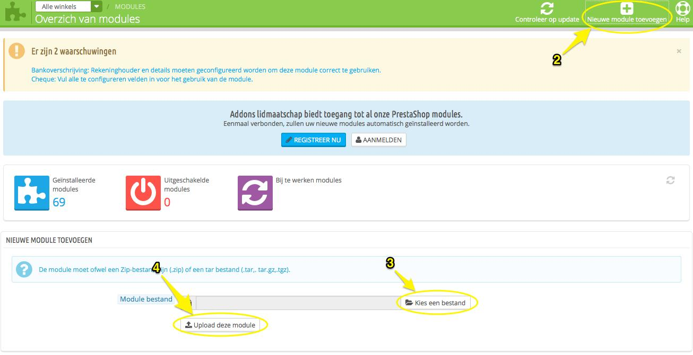
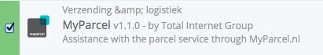
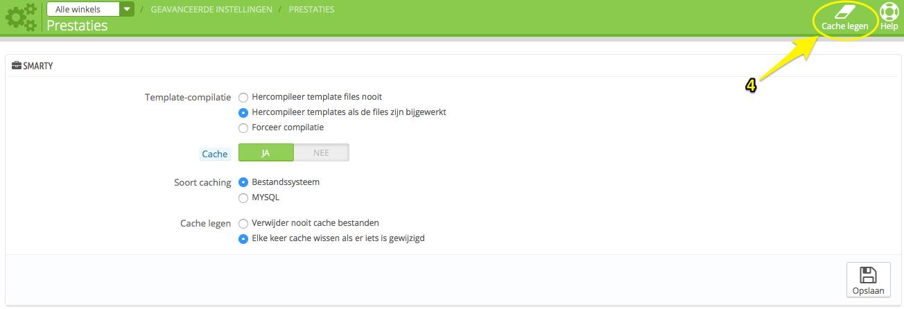
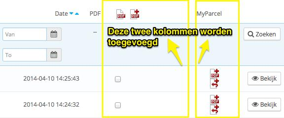
1.1 Instellen PostNL afhaallocaties
- Als je PakjeGemak (Ophalen op een afhaallocatie) wilt aanbieden aan jouw klanten, ga dan naar het admin panel, naar Modules en de categorie Shipping and Logistics/ Verzending & Logistiek. Kies hier voor ‘Configureer’.
- Vul hier jouw MyParcel gebruikersnaam in en de API key. De API key kun je vinden in jouw MyParcel account onder Instellingen > Algemeen > API key.
- PakjeGemak is geactiveerd. Jouw klanten krijgen in de checkout de mogelijkheid een PostNL locatie te kiezen, waar men het pakket vervolgens kan ophalen.
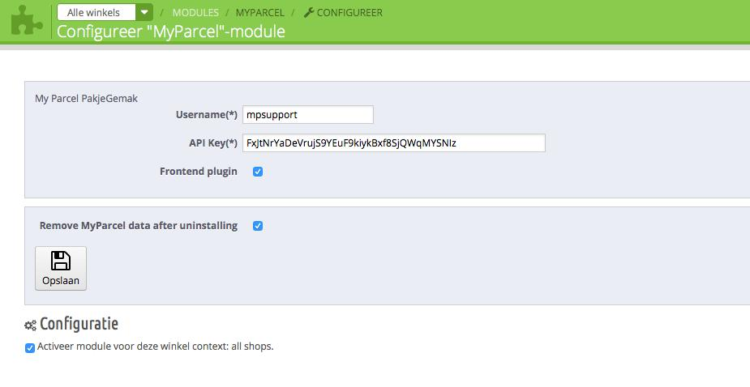
2. De plugin gebruiken
Met de geïnstalleerde koppeling kun je voortaan vanuit jouw PrestaShop back-office direct etiketten aanmaken en uitprinten. Je kunt voor een enkele zending een etiket aanmaken of meerdere orders tegelijkertijd verwerken.
2.1 Instellingen MyParcel
- Het is mogelijk om jouw ordernummers direct aan de zendingen te koppelen. Het ordernummer van de betreffende zending komt dan onder het eigen kenmerk te staan, zowel op het etiket als in het zendingenoverzicht van MyParcel.
Je kunt deze optie activeren in jouw MyParcel account. Ga hiervoor naar Instellingen > Algemeen en vink de optie “plug-in order id toevoegen voor kenmerk” aan. - Je kan alleen met de plug-in werken als jouw account bij MyParcel ingesteld staat op achteraf betalen. Betaal je normaal gesproken altijd direct per zending? Neem dan contact op met MyParcel om de instellingen in jouw account aan te laten passen.
2.2 Een etiket aanmaken per zending
- Ga naar jouw orderoverzicht (Bestellingen) in PrestaShop. Ga naar de betreffende order en klik op het pdf+ icoontje in de MyParcel kolom:
- Er verschijnt een pop-up (wees er zeker van dat je geen pop-ups blokkeert in jouw browser). Zorg dat je bij MyParcel bent ingelogd of log anders alsnog in.
De pop-up geeft een ingevuld zending formulier weer. Controleer hier de ingevulde gegevens en pas zo nodig aan. Kies indien nodig een van de aanvullende opties en pas indien gewenst het eigen kenmerk aan. Kies vervolgens voor “opslaan”.
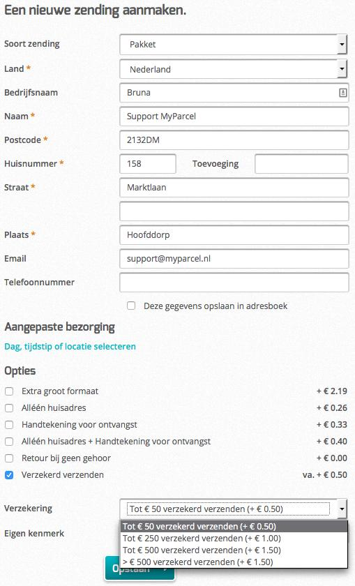 - De pop-up verdwijnt. Aan jouw orderoverzicht is nu in de derde kolom van rechts een pdf icoontje toegevoegd. Klik hierop om de aangemaakte zending uit te printen.
- Er verschijnt wederom een pop-up, je kunt nu de printpositie kiezen. Op de gekleurde vakjes zal worden geprint. Als je bijvoorbeeld de eerste positie (linksboven) leeg laat, zal het afdrukken rechtsboven beginnen.
- Er verschijnt een pdf met daarop jouw etiket, deze kun je afdrukken.
- Als je terug gaat naar jouw orderoverzicht en op de knop Track & Trace klikt, kunt je de status van de zending bekijken op de PostNL pagina.
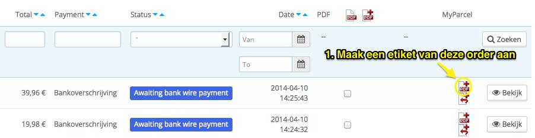
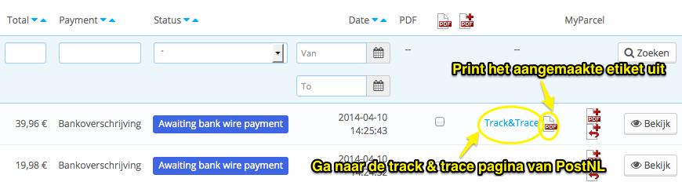
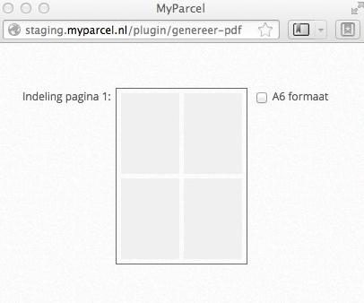
2.3 Meerdere etiketten als batch verwerken
- Ga naar jouw orderoverzicht (Bestellingen) in PrestaShop. Selecteer hier (in de 4e kolom vanrechts) de orders waarvoor je een etiket wilt aanmaken. Klik boven deze kolom vervolgens op het pdf+ icoontje.
- Kies voor OK om te bevestigen: 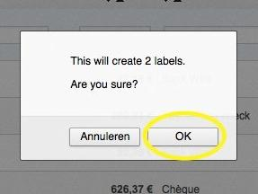
- Je bent weer terug in het orderoverzicht van PrestaShop. Je kunt de aangemaakte etiketten nu afdrukken. Selecteer de zendingen waar een etiket voor afgedrukt dient te worden. Klik vervolgens in deze kolom op het pdf icoontje om de etiketten af te drukken.
- Er verschijnt wederom een pop-up, je kunt nu de printpositie kiezen. Op de gekleurde vakjes zal worden geprint. Als je bijvoorbeeld de eerste positie (linksboven) leeg laat, zal het afdrukken rechtsboven beginnen.
- Er verschijnt een pdf met daarop jouw etiket, deze kun je afdrukken.
- Als je terug gaat naar jouw orderoverzicht en op de knop Track & Trace klikt, kun je de status van de zending bekijken op de PostNL pagina.
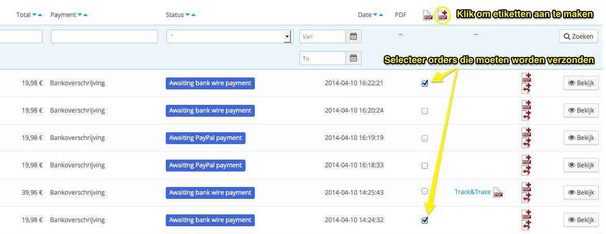
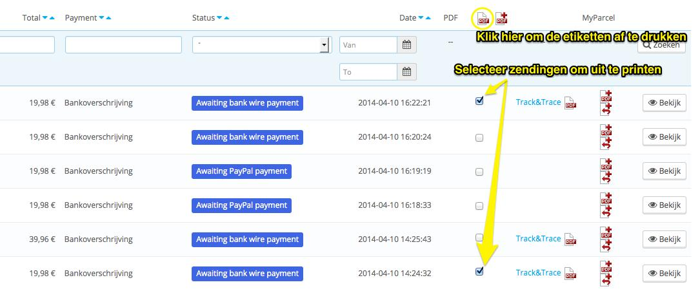
3. Release notes
v1.1.4 Order status kan in bulk aangepast worden!
4. Hulp nodig?
Indien je vragen hebt over de installatie of het gebruik van de plug-in, helpen wij je graag. Ook tips & suggesties voor verbetering van de (werking) van de plug-in, horen wij graag. Mail naar support@myparcel.nl of bel: 023 30 30 315.